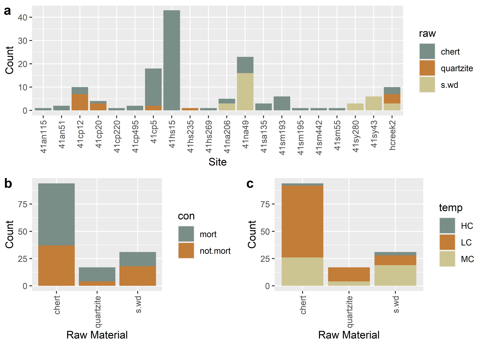

Chapter 3 Raw material
# qualitative data for Perdiz points
library(here)
library(tidyverse)
library(wesanderson)
library(ggpubr)
# read attribute data
data <- read.csv("perdiz.csv", header = TRUE, as.is = TRUE)
raw <- data$raw.mat # raw material
con <- data$context # burial context
temp <- data$temporal # temporal period
site <- data$trinomial # site
#####
# barplot of raw material count by burial context
raw.con <- ggplot(data, aes(raw)) +
geom_bar(aes(fill = con))+
scale_fill_manual(values = wes_palette("Moonrise2")) +
theme(axis.text.x = element_text(angle = 90, vjust = 0.5, hjust=1)) +
labs(x = 'Raw Material', y = 'Count')
# barplot of raw material count by temporal
raw.temp <- ggplot(data, aes(raw)) +
geom_bar(aes(fill = temp))+
scale_fill_manual(values = wes_palette("Moonrise2")) +
theme(axis.text.x = element_text(angle = 90, vjust = 0.5, hjust=1)) +
labs(x = 'Raw Material', y = 'Count')
# barplot of raw material count by site
raw.site <- ggplot(data, aes(trinomial)) +
geom_bar(aes(fill = raw))+
scale_fill_manual(values = wes_palette("Moonrise2")) +
theme(axis.text.x = element_text(angle = 90, vjust = 0.5, hjust=1)) +
labs(x = 'Site', y = 'Count')
# render figure
raw.figure <- ggarrange(raw.site,
ggarrange(raw.con,raw.temp,
ncol = 2,
labels = c("b","c")),
nrow = 2,
labels = c("a")
)
# plot figure
raw.figure